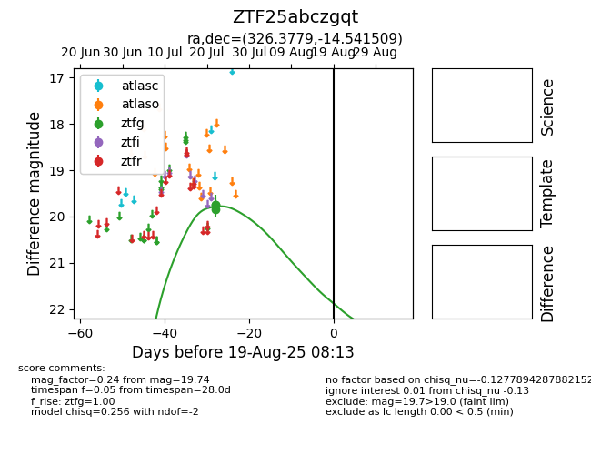

Target ZTF25abczgqt at 2025-08-19 09:59, see:
FINK: fink-portal.org/ZTF25abczgqt
Lasair: lasair-ztf.lsst.ac.uk/objects/ZTF25abczgqt
ALeRCE: alerce.online/object/ZTF25abczgqt
alt names
ZTF25abczgqt (ztf,fink)
coordinates:
equatorial (ra, dec) = (326.3779,-14.54151)
galactic (l, b) = (39.4717,-45.04750)
photometry
last ztfg=19.74
3 ztfg detections
